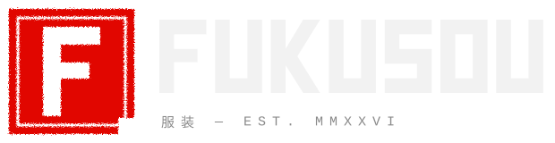

Three original marks for Fukusou (服装 — "clothing"). Hand-built from geometric shapes: no borrowed type, no borrowed marks.
OFFICIAL — CHROME
The brand's own chrome logo, redrawn as a vector so it stays sharp at any size. The last letter is a clean U (no Y tail). Original image: original-reference.png.
ON THE SITE

A — CUT
Square block wordmark sliced by one raw diagonal cut, red full-stop. Loudest and simplest; reads from across the street.
OPTION

B — HANKO
Inked red stamp (Japanese name seal) with a knocked-out F, next to the block wordmark. The stamp alone works as the icon, tag and favicon.
CONCEPT

C — CHISEL
Sharp, carved gallery-style F monogram in a framed plate with red corner diamonds. Most "art object"; best on tags and back prints.